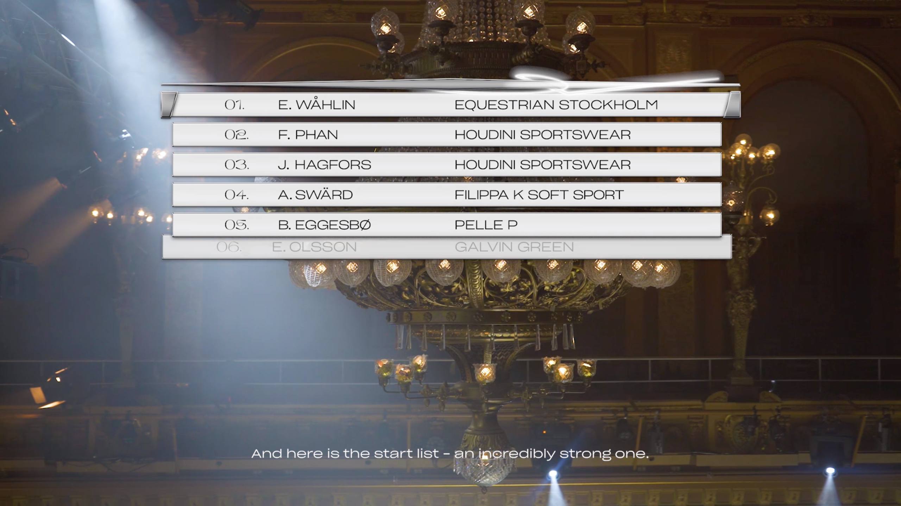

Fashion is like sport and sport is like fashion. They both measure prestation and competition at the arena, runway, the bench or back stage. You win or you lose.

Collaboration with: Kitty Schumacher, Agnes Vannerus Lindblom, Carl Cavallius, Jonthan Jervelind, Susanna Lycke, Gabriel Fager Ferrari & Sofus Nyström
See the movie & the digital lookbook at: www.sportpsyche.se.